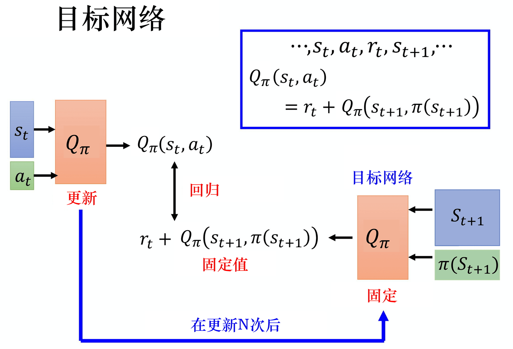
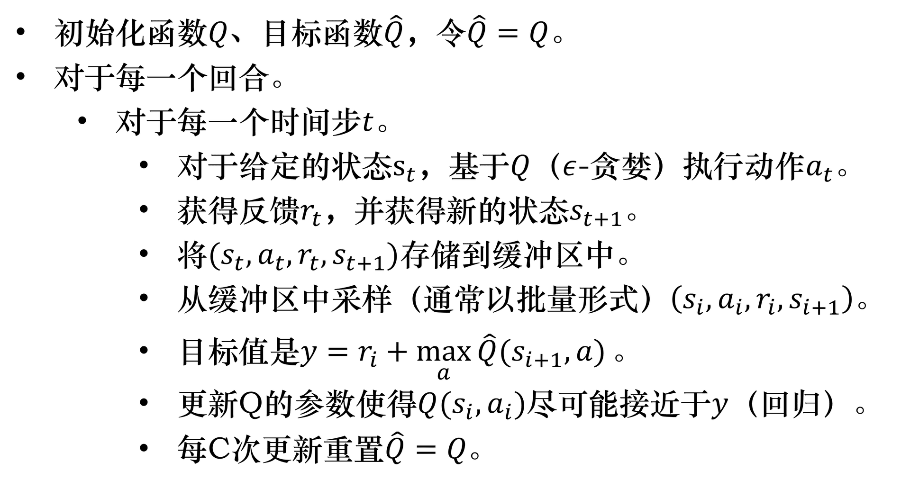

DQN
引言
上一章节我们算出各个 \(Q(s, a)\) 的值，这样我们可以从 \(s_0\) 开始逐步推出动作。这些方法都叫做表格法。
表格法有什么局限呢？比如 Q-Learning，使用一个 Q 表格来存储每一个状态-动作对对应的 Q 值。当状态空间或动作空间很大，甚至连续时，Q 表格会变得非常庞大，具体的缺点想必我就不用说了，存储、时间等等等。而现实生活中往往是这样的，比如下围棋。
神经网络的引入
那在如今这个时代，很显然了，使用神经网络去模拟这个 Q 表格，这样 Q 函数就变成了一个由神经网络参数所定义的函数：\(Q_\omega(s, a)\)，其中 \(\omega\) 是神经网络的权重。
损失函数设计
那么如何去设计神经网络的损失函数，这样才能训练呀。我们希望这个 Q 函数和 Q 表格类似，那么 Q 表格有什么特点？回顾 Q-learning 的核心思想，是通过以下公式更新 Q 值：
所以最终收敛的时候：
我们希望设计的 Q 函数也有这个特点，自然而然地，想到设计他的损失函数为：
半梯度训练
我们如果给上面那个损失函数求导，会遇到一个问题，「估计值」和「目标值」都是神经网络计算出来的，这个和「监督学习」是有差别的：在监督学习中，目标值是固定的标签；而在这里，我们发现，「目标值」竟然是个「移动靶」？
这会带来训练的不稳定的偏差。为了解决这个问题，我们可以「假装」目标值是固定的，也就是说，在给损失函数求梯度时，我们认为 \(r + \gamma \max_{a'} Q_\omega(s', a')\) 是个常数，而只给 \(Q_\omega(s, a)\) 求导，然后像标准梯度下降一样对当前估计值计算梯度，然后更新参数。
因为我们只计算了函数的一部分梯度，而不是整个函数的梯度，所以这种方法称为「半梯度法」（semi-gradient）。当然这种妥协不是没有代价的，由于忽略了目标值对参数的依赖性，这种更新方式可能导致收敛性问题。但好消息是，我们终于可以愉快地训练这个神经网络了。
DQN 的技巧
经验回放
第一个问题就是「数据相关性」。在传统的监督学习中，我们通常假设数据之间是「独立同分布」的，样本之间没有依赖性。但是，在Q-Learning 这种，数据是智能体与环境进行交互，这些样本之间存在很强的「相关性」。例如，智能体连续向左移动几次，则这些经验样本在状态、动作和奖励上都非常相似。
高度相关的样本会使得模型在短时间内接触到相似的输入模式，导致模型参数更新的方向单一且不稳定。如果连续的样本都指向同一个方向的梯度，模型很容易陷入局部最优解。另外，这可能还会让算法的泛化性降低。
解决方式是使用 经验回放，将智能体与环境交互的经验存储到一个缓冲区中，然后从缓冲区中随机采样一批经验来更新 Q 网络。
这样有什么好处呢？随机采样打破了样本之间的时间相关性，使得模型在训练时接触到的样本不再是连续的序列，而是来自不同时间点的样本，从而降低了样本之间的时间相关性。同时，回放缓存中存储了过去多个时间步的经验，这使得每次训练使用的样本具有更高的多样性，有助于模型学习到更稳健的特征。
目标网络
我们前面介绍了「半梯度法」，但只是一种妥协之举，他只是权且让神经网络「可以」被训练而已，但这种方式仍然很不稳定、也容易导致误差累积。为了进一步缓解这个问题，DQN还会采用的一个技巧是「目标网络」（Target Network），其核心思想是使用两个不同的神经网络 ：
- 主网络（Online Network） ：用于估计当前状态动作的 Q 值，并根据梯度下降进行参数更新。
- 目标网络（Target Network） ：用于计算 TD 目标，它的参数会滞后于主网络，从而提供更稳定的目标值。
目标网络的参数在一定时间内是固定的，从而避免目标 Q 值频繁变化，从而提高训练的稳定性。但又不是一直固定的，它隔一段时间会从主网络那里「同步」最新的参数，让目标值不要偏差太多。这在一定程度上打破了「Q值更新和Q值估计」的强关联性，降低了「自己追逐自己」的现象。

探索
这个和之前说的 \(\epsilon\)-greedy 方法类似，就是故意有概率走一些其他路径。这个和 Dropout 也有点像，总之具体细节就不谈了，当前我也没细究。这里引用一下别人的说法：
如果我们没有好的探索，在训练的时候就会遇到这种问题。例如， 假设我们用 深度 Q 网络 来玩贪吃蛇。我们有一条蛇，它在环境里面走来走去，吃到星星，就加分。假设游戏一开始，蛇往上走，然后吃到星星，就可以得到分数，它就知道往上走可以得到奖励。接下来它就再也不会采取往上走以外的动作了，以后就会变成每次游戏一开始，它就往上走，然后游戏结束。所以需要有探索的机制，让智能体知道，虽然根据之前采样的结果，a1 好像是不错的，但我们至少偶尔也试一下 a2 和 a3，说不定它们更好。

双 Q 学习（DDQN）
实际表现中，Q 值往往是被高估的，即 Q 网络得出的值比实际正确的值要大很多。原因：
神经网络存在随机性，假设在状态 A 选择左动作最好，但是训练的时候，恰好向右走遇到了一个较大的正向噪声，那么它可能会认为向右走更好久而久之，算法可能会错误地认为在状态 A 选择右动作更优，从而陷入次优策略。
双 Q 学习（Double Q-learning）是一种解决最大化偏差问题的有效方法。它的核心思想是将选择动作的 Q 值和评估动作价值的 Q 值分离开来。
在原来时，在状态 s 的时候，我们穷举所有的 a，把每一个 a 都代入 Q 函数，看哪一个 a 可以得到的 Q 值最高，那就选择这个动作 a，并且就把那个 Q 值进行更新。但是在 DDQN 里面有两个 Q 网络，第一个 Q 网络还是决定哪一个动作的 Q 值最大，但我们决定动作以后，Q 值是用 Q' 算出来的
而且上面提到的目标网络技巧中，原来的 DQN 其实已经有两个 Q 网络，这里 DDQN 可以直接复用。会用会更新参数的 Q 网络去选动作，用目标网络（固定住的网络）计算值。DDQN 相较于原来的网络的更改是最少的，它几乎没有增加任何的运算量，也不需要新的网络，如果只选一个技巧，我们一般都会选 DDQN，因为其很容易实现。
具体细节就不赘述了，因为我也没怎么了解。
其他
其他的都不去了解了，太过细节了：
- 竞争深度 Q 网络（Dueling DQN）
- 优先级经验回放
- 分布 Q 式网络
- ....